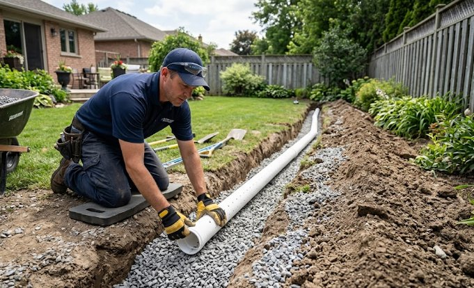
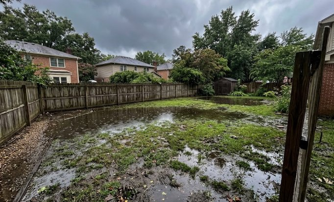
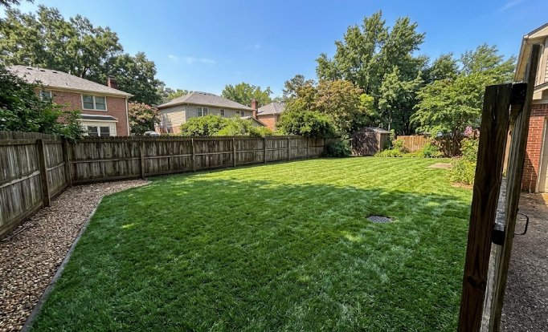
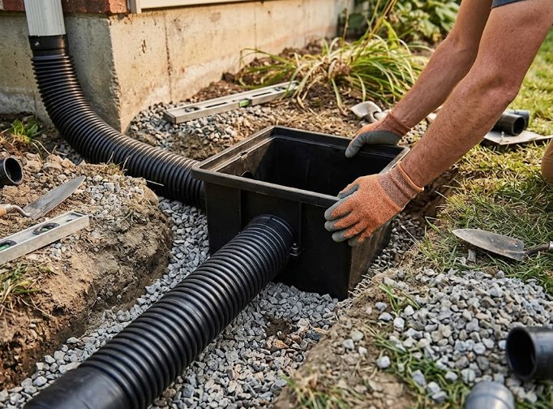
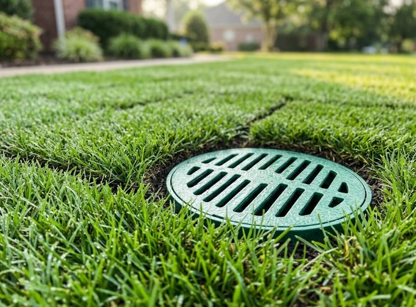

French drains, regrading, sump pumps, and erosion control for homeowners who are tired of the swamp. Licensed, local, and honest about what your yard actually needs.

A French drain isn't a pipe in a ditch. It's a system — and every layer has a job. Keep scrolling and watch one come together.
Cut on a laser grade so water has one direction to go: away from your foundation.
Non-woven geotextile wraps the whole system so soil can't silt it shut in two years.
Clean #57 stone — never crusher run — so water moves through instead of ponding.
Rigid SDR-35 with holes down, pitched a quarter inch per foot to daylight.
You mow right over it. The swamp is gone and the yard looks untouched.
Anyone can promise a dry yard. We show the same lawn, shot from the same spot, before and after the fix — because that's the only proof that means anything.

After every hard rain — standing water across the whole lawn, from the back gate.

Same yard, same gate — French drain and regrading. Dry through every storm since.
The permanent fix for saturated yards and wet crawl spaces.
Reshape the slope so water leaves on its own — no pipe needed.
Basement and crawl-space systems with battery backup options.
Buried extensions that carry roof water to daylight, not your foundation.
Stop the washout before it takes the hillside with it.
Drainage that looks like landscaping — because it is.
Right-sized equipment — trenches cut clean, spoil on boards, lawns protected.

The part you never see again — basins set level, pipe bedded in washed gravel.

The part you see every day — a grate flush in fresh sod, like we were never there.
In a real build these are the business's own public reviews, quoted and credited from their Google listing — never invented.
"[Real review from the business's Google profile goes here.]"
— Customer name, from their public listing"[Real review from the business's Google profile goes here.]"
— Customer name, from their public listing"[Real review from the business's Google profile goes here.]"
— Customer name, from their public listingWe don't promise rankings or lead volume — nobody honest can. We promise the work, the timeline, and the ownership.
Tell us what the water's doing and we'll tell you what it takes to stop it.
Call (000) 000-0000Phone photos in daylight, landscape orientation. Text them over and every photo on this page becomes your business — the ones here now just show where yours go.